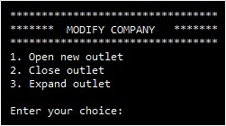

Introduction |
The Food Magnate Simulation models how profitable different types of restaurant chain would be within a simulated settlement.
The structure of the simulation, conceptually, is as follows:
The program contains the following objects:
- A single object of type Simulation, which is responsible for constructing, either directly or indirectly, the remaining objects
- A single object of type Settlement, which is stored within the Simulation object. Alternatively, this can be an object of type LargeSettlement, which behaves identically but can cover a larger area and contain more households.
- An unlimited number of Household objects, each of which is contained within the settlement. Initially, a settlement begins with 250 of these, but a LargeSettlement object might have more.
- An unlimited number of Company objects, although the default starting number of companies is three. The Company objects are contained directly within the Simulation object.
- An unlimited number of Outlet objects, with each outlet being stored in a particular Company object. A company cannot exist without at least one outlet.
Let's look at the attributes for each class in detail…
Class: Simulation
The Main subroutine creates the program's single Simulation object and calls its Run subroutine. From that point onwards, it is the Simulation object that is responsible for creating and managing all other objects. Its attributes are as follows:
- A single Settlement object, SimulationSettlement; since the Settlement object contains the Household objects, the simulation cannot interact directly with a household without calling an accessor subroutine in the Settlement class
- An integer variable to store the number of companies, NoOfCompanies
- A float called FuelCostPerUnit, which is used to calculate delivery costs between outlets belonging to the same company; it is passed to the constructor of the Company class
- A second float, called BaseCostForDelivery, which is also passed to the Company constructor and subsequently used to calculate delivery costs
- A list called Companies, to store objects of type Company; a list is a better choice than an array, since any number of companies can be stored
Class: Company
A company can be either a fast-food company, a family company or a named chef company. This means that all outlets belonging to a company will also be of that type; a company cannot have, for example, some fast-food outlets and some family outlets. The Company class's attributes are as follows:
- A string, Name, to store the name of the company
- A second string, called Category; this stores the type of company, and can be either 'fast food', 'family' or 'named chef'
- A series of float attributes:
- Balance: the amount of money a company owns, which can be positive, negative or zero
- ReputationScore: a measure of how well regarded the company is; a company with a high reputation score is more likely to be visited than one with a low reputation score
- AvgCostPerMeal: how much the company pays for a meal
- AvgPricePerMeal: how much a customer pays for a meal when visiting one of the company's outlets
- DailyCosts: single cost per day, per company, initially set to 100, but with a small chance that it will change, up or down, between days
- FamilyOutletCost: the cost of opening an outlet for a 'family' company
- FastFoodOutletCost: the cost of opening an outlet for a 'fast food' company
- NamedChefOutletCost: the cost of opening an outlet for a 'named chef' company
- FuelCostPerUnit: for companies with multiple outlets, this is part of the delivery cost from their 'main' outlet (the first one to be created) and each subsequent outlet
- BaseCostOfDelivery: for companies with any number of outlets, this amount is paid once per day
- A list called Outlets, to store objects of type Outlet; again, this offers more flexibility than using an array
- A series of integer attributes:
- FamilyFoodOutletCapacity: capacity for a 'family' outlet, initialised to 150
- FastFoodOutletCapacity: capacity for a 'fast food' outlet, initialised to 200
- NamedChefOutletCapacity: capacity for a 'named chef' outlet, initialised to 50
Class: Outlet
An Outlet object is stored within a data structure in a Company object, modelling the fact that an outlet is owned by a single company. Outlets are also associated with the settlement, since each outlet has a location within that settlement, and households, if they choose to visit a company's outlet, will always visit the closest one.
The Outlet class's attributes are as follows:
- A series of integer attributes:
- VisitsToday: the number of times a household has visited this outlet on the current day; it is worth noting that there is nothing preventing this exceeding the outlet's capacity
- XCoord and YCoord: the outlet's location within the settlement
- Capacity: how many seats are in the outlet, used to calculate daily costs
- MaxCapacity: the maximum to which the capacity can be extended, also used to calculate daily costs
- A float, DailyCosts, which is how much the outlet costs to run each day, irrespective of visitors; this is not fixed, and can be changed as capacity changes. It could also be changed as a result of a call to the Outlet class's AlterDailyCost subroutine; however, this is never called, nor is GetCapacity.
Class: Settlement
The simulation contains a single settlement, and each household and outlet has a location within that settlement. The settlement is easy to visualise in terms of a grid, but it is not stored as a two-dimensional array. The reason for this is twofold. Firstly, most elements within a settlement array would be empty. The default settings create a settlement with one million possible locations, but only 250 households and 12 company outlets. Secondly, a settlement contains objects of different types – namely households and outlets. Instead, each outlet and each household stores its own X and Y coordinates, which must be within the bounds of the settlement.
The Settlement class's attributes are as follows:
- An integer variable, StartNoOfHouseholds, which is how many households exist at the start of the simulation. Based on existing code, this can go up but not down as the simulation runs. The default value is 250.
- Two further integers, XSize and YSize, which store between them the size of the settlement. The default value for each of these is 1,000, meaning there are one million possible locations.
- A list called Households, to store each Household object
The LargeSettlement class inherits from Settlement, and allows the user to add to (but not subtract from) the values of StartNoOfHouseholds, XSize and YSize.
Class: Household
To all intents and purposes, this class models a consumer, since the whole household either eats out or does not. There is scope here for modelling households of different sizes, or households in which some members (but not all) go out to eat, or even households where different individuals eat out at different outlets at the same time. The Household class's attributes are as follows:
- A float, ChanceEatOutPerDay, storing a value between 0 and 1, representing the probability of the household going out to eat
- Integer variables XCoord and YCoord, representing a household’s location in the settlement
- A static integer, NextID, which numbers each new household incrementally, starting from 1
- An additional integer, ID, which stores the value contained in NextID at point of instantiation
Overview
When the program begins:
- A new Simulation object is constructed
- That Simulation object constructs a new object of type Settlement or LargeSettlement (which inherits from Settlement), depending on user input. The Settlement constructor calls the constructor of Household
- That Simulation object, as part of being constructed, also constructs new Company objects, which are either the three default companies hard-coded into the Skeleton Program or user-defined, depending on user input
- The AddCompany subroutine is called if user-defined companies are selected, allowing the user to enter specific details of each company
- The Company constructor will make at least one call to the Outlet constructor, since each company must have at least one outlet
- The Simulation object's Run subroutine is called (see next hierarchy diagram)
Main Menu
'Modify Company' menu, shown when the user selects option 3 from the main menu and enters a valid company name
When the Run subroutine is called:
- The user is presented with a menu as a result of a call to DisplayMenu
- If the user selects option 1, a call is made to DisplayHouseholds, which lists details of all households in the settlement via a call to DisplayHouseholds in the Settlement class, which in turn calls GetDetails in each instance of the Household class
- If the user selects option 2, details of all companies are displayed via a call to DisplayCompanies, which calls the GetDetails subroutine in each Company The GetDetails subroutine in the Company class calls a GetDetails subroutine for each outlet, meaning that selecting option 2 from the menu results in details of all companies, and their outlets, being displayed.
- If the user selects option 3, to modify a company, they are prompted for a company name, which is then passed to GetIndexOfCompany in order to get the index of that company. The subsequent call to ModifyCompany presents the user with a second menu containing three options. They can open a new outlet (OpenOutlet()), close an outlet (CloseOutlet()) or expand an existing outlet (ExpandOutlet()).
- If the user selects option 4, a new company can be created via a call to AddCompany. This prompts the user for details of the new company's name, type and starting balance. The new company will have a single outlet in a random location within the settlement.
- There is no option 5, which makes it quite likely that adding an option 5 will be part of the exam
- If the user selects option 6, a call is made to ProcessDayEnd in the Simulation. Note that an identically named subroutine exists in the Company class, so be sure not to confuse the two. This is the most involved subroutine in the program and is addressed in the next hierarchy diagram.
When each day ends:
- The call to NewDay (in the Company class) calls NewDay (a subroutine in each Outlet class) to reset the number of visits to zero
- The reputation score of each company is accessed and added to a list, with each float value therein storing a running total of all reputation scores so far (i.e. the first value stored is for the first company, the second value stored is the sum of the reputation scores for the first two companies, the third value stored is the sum of the reputation scores for the first three companies, and so on)
- The call to GetNumberOfHouseholds is to facilitate a loop through all households in a settlement
- The call to FindOutIfHouseholdEatsOut, for each Household object, returns a Boolean, which is more likely to be true for households with a higher probability of eating out. If it is true, a company is selected at random, using the list from step 15, with companies holding a higher reputation score more likely to be chosen.
- For the company that is chosen, the nearest outlet to the household eating out is visited. The distances to all outlets belonging to the chosen company are examined, and distances are calculated in the following way:
- Distances are calculated using Pythagoras; taking the x distance, squaring it, adding the square of the y distance and then taking the square root of the result.
- In the event that two outlets are of an equal distance from a house, the outlet examined first (i.e. the outlet appearing earlier in the Outlets list) will be the one visited.
- The call to DisplayCompaniesAtDayEnd calls the ProcessDayEnd subroutine in the Company. This subroutine calculates changes to the company's balance, which is affected by visits to each outlet per day, the price at which meals are bought and sold, and the distance between outlets for the same company, for which the delivery of ingredients incurs a cost based on the price of fuel (distances are calculated as above). The old balance and the new balance are then displayed, along with other details of the company and its outlets.
- The call to DisplayEventsAtDayEnd generates either a random probability of additional households in the settlement, a change of fuel cost for a company chosen at random, a change of reputation for a company chosen at random or a change of daily costs for a company chosen at random